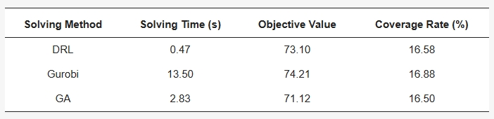

摘要
共享电动滑板车的普及给城市出行带来了方便，但也伴随着车辆乱停乱放和供需失衡等问题。鉴于当前共享电动滑板车投放数量和空间布局不合理，以及对投放点选址的研究不足，本研究以覆盖用户需求最大和用户到投放点的距离总和最小为优化目标，提出一个基于距离容忍度的最大覆盖选址模型，并设计深度强化学习算法求解模型。通过案例实验，表明该模型能够有效优化电动滑板车投放点布局。本研究为城市共享交通工具设施站点选址提供了有益的参考依据，深度强化学习算法的应用也为设施选址问题提供了一种高效的解决途径。
背景
近年来，微型交通市场蓬勃兴起，为城市交通问题提供了全新解决途径。其中，电动滑板车作为代表性的微型交通工具，因其小巧、机动、容易操控、适应城市环境的特点，能够节省出行时间、减少交通拥堵，被广泛应用于世界各地城市，为城市出行带来便捷和效率的提升。
然而，电动滑板车的广泛普及伴随着一系列问题。采用无桩操作系统的电动滑板车共享服务导致滑板车停放的不规则性，占用城市空间，妨碍公共设施的正常使用，严重影响行人的安全与舒适。这不仅扰乱了城市秩序，对交通流畅性造成了负面影响，还加大了电动滑板车提供商的管理难度。电动滑板车的投放数量和空间布局的不合理，使用户可能难以获得电动滑板车，从而降低了出行体验的质量。
为更好地满足各地区用户的出行需求，提高电动滑板车的利用率，减少不当的停车行为，改善城市居民的出行体验，研究电动滑板车的出行需求和投放点选址显得极为重要。以往的研究中，对电动滑板车潜在需求的分析通常将一定距离范围内的需求视为相同，未考虑距离远近对需求强度的潜在影响。因此，本研究提出基于距离容忍度的最大覆盖模型，充分考虑用户对于投放点步行距离的接受程度。以芝加哥市为研究区域，通过对芝加哥市电动滑板车出行特征分析和目标用户、交通状况以及兴趣点分析，采用深度强化学习算法确定案例区域最佳的电动滑板车投放点布局，验证了模型的有效性。本研究将为芝加哥市政府优化城市交通布局和共享电动滑板车提供商的车辆调度提供决策支持，同时为设施选址问题的求解方法提供一种高效的解决途径。

图1 电动滑板车行程统计及研究区概况图
基于距离容忍度的最大覆盖选址模型构建及算法设计
1. 问题描述
MCLP模型通过巧妙地设置设施数量和覆盖半径使得一组设施点能够最大程度地覆盖目标区域。然而几乎所有的MCLP模型对覆盖情况是二元假设，如果需求点和服务设施之间的距离小于覆盖半径，则被认为完全覆盖，否则不被覆盖。这样的假设只是对距离进行了简单处理，并未考虑用户对于设施点距离的接受程度，导致一些设施点虽然可以覆盖大量用户，但超出了用户的出行容忍范围，使得实际使用率低、用户体验不佳。相较于公共交通方式而言，无桩共享电动滑板车用户对投放点的距离敏感性更强，用户可接受的距离在不超过300米，因此在进行布局优化决策的过程中，必须保证用户对于共享电动滑板车投放点的距离接受度。
传统的覆盖模型只从数量上满足共享单车的出行需求，而忽视了用户对于共享单车停放点的出行感知，因此，本研究提出基于距离容忍度的最大覆盖模型，充分考虑需求点用户对于投放点距离的接受程度，使用户到共享电动滑板车投放点之间的可达性和便利性的感知最好。以覆盖用户需求最大和用户到投放点的距离总和最小为优化目标建立电动滑板车投放点选址模型，确定更符合用户实际出行偏好的投放点位置。
2. 模型构建
为了方便模型构建和分析，对模型涉及的参数和符号说明如下：
集合：I为电动滑板车需求点的集合；J为电动滑板车投放候选点的集合；N_i为覆盖需求点i的候选点集合。
参数：i为电动滑板车需求点；j为电动滑板车投放候选点；d_ij为第i个需求点到第j个投放点的步行距离；F(d_ij )为距离容忍度函数；p为准备设立的投放点个数；S为候选点j最大服务距离；w_i为需求点i的需求强度；Y_ij为需求点i被候选点j覆盖的情况。
距离容忍度函数定义为：当用户至投放点的距离在d_a米之内时，用户对于该投放点的接受度最佳；当距离超出d_a米，在d_b米之内时，用户接受度将会随着距离增加而降低；当距离超过d_b米时，用户对于该投放点的接受度最差，此时用户的容忍度为0。
在该模型中，第一个目标是最大程度地覆盖需求点，使得需求权重总和最大化。第二个目标是尽可能缩短用户到投放点的距离，使得用户取车和还车的距离总和最小。为了统一表达优化目标，使用线性加权方法整合双目标，如下所示：
3. 深度强化学习算法设计
在深度强化学习中，智能体与环境的交互，通过试错的方式学习制定决策策略，以最大化累积奖励，这个迭代过程涉及五个基本组成部分：智能体、环境、状态、动作和奖励。本研究采用Kool等人提出的注意力模型，并利用贪婪展开基线的REINFORE算法进行模型训练。
该算法的设计思路如下：
目标：在尽量减少用户与共享电动滑板车投放点之间的距离的同时，最大化需求点的覆盖范围。
状态：表示环境的状态，包括潜在投放点的位置、需求点及其相应权重。
动作：将可能的动作定义为选择位置以建立共享电动滑板车投放点。
奖励：设计一个奖励函数，根据公式（12）整合出行需求和距离容忍度。
模型：利用注意力模型估计策略𝑝𝜃(𝜋|𝑠)，其中𝜃表示模型参数，𝜋是动作序列，𝑠是当前状态。将问题特定特征（例如位置、需求、距离）纳入模型的编码器中以生成节点嵌入。根据解码器的输出依次选择投放点位置，确保动作选择符合问题的约束条件。
基线：利用策略的确定性贪婪展开来估计基线，减少奖励的方差。
强化：计算策略梯度，使用获得的奖励与基线之间的差异，调整模型参数以最大化期望奖励。使用Adam优化器根据计算的梯度更新模型参数。
训练循环：对于每个时期，抽取一组实例，执行动作选择，计算奖励，并使用REINFORE算法更新模型。当奖励函数值变化最小或达到最大时期数时停止训练。
验证：定期对模型进行验证，使用单独的一组实例确保泛化，并避免过拟合。
结果与验证
选择奖励回报值最大的992次训练epoch数据进行基于距离容忍度的MCLP模型求解，得到的电动滑板车投放点选址结果在空间分布上与出行空间特征相吻合，主要分布于需求量和候选点密集的Loop和River North普查区，表现出均匀的分布特征，避免了大量的聚集情况，对需求点的覆盖情况良好，覆盖率达到16.58%，模型的目标函数值为73.06，满足投放点选址优化的要求。
为验证深度强化学习算法在解决设施选址问题上的有效性和可行性，在规模及模型的相关参数设置相同的条件下，将Gurobi求解器和遗传算法的求解结果进行对比分析，比较不同求解方式的求解时间、目标函数值、需求点覆盖率（表3）以及投放点的空间分布（图4）。结果显示，在目标函数值和覆盖率上，DRL的选址结果与Gurobi提供的最优解的差距较小，且表现优于遗传算法。在求解时间上，DRL表现出了明显的优势，比遗传算法快5倍以上，比Gurobi快20倍以上，展现了其快速求解的能力。比较三种算法得到的投放点的空间分布，发现drl结果和Gurobi结果的重合度较高，但drl在A和B区域选择了一两个投放点，而这些点在Gurobi的结果中不存在。进一步分析发现，A和B区域具有非常高的出行频率，这说明了DRL算法结果更符合用户使用滑板车的实际情况。虽然其结果在目标函数值和覆盖率上不如Gurobi，但其在空间分布均匀上优于Gurobi。
图4 不同方式求解的结果：（a）DRL的求解结果;（b）Gurobi的求解结果;（c）遗传算法的求解结果。需求点根据需求大小呈渐变色，颜色越深表明需求越大。
表3 不同求解方式结果对比
结论
研究针对芝加哥市共享电动滑板车目前存在的投放点分布和需求不匹配问题，提出一个基于距离容忍度的最大覆盖选址模型，该模型考虑了用户到电动滑板车投放点的距离，在最大覆盖模型的基础上引入了距离容忍度函数，能够更准确地反映用户需求随距离变化的情况，弥补了传统覆盖模型只关注数量而忽视距离因素的不足。
为验证模型的可行性，研究设计了基于注意力机制的深度强化学习算法进行案例实验。通过与Gurobi求解器和遗传算法的结果对比分析，发现深度强化学习的选址结果在空间分布上效果更好，验证了深度强化学习算法在设施选址领域的高效性。
与成熟求解器、四种启发式方法以及注意力模型进行对比实验，证明了SpoNet的有效性。通过消融实验进一步验证了动态覆盖信息和门控循环单元的有效性。